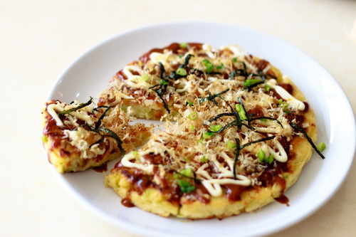

พิซซ่าญี่ปุ่น

ส่วนผสม
- แป้งเค้ก 1 ถ้วย
- ไข่ไก่ 2 ฟอง
- น้ำเปล่า 1 ถ้วย
- กะหล่ำปลีซอย 1/2 ลูก
- แครอท (หั่นเต๋าเล็ก) 1/2 ผล
- น้ำมันพืช (เล็กน้อย)
- เบคอน
- ซอสโอโคโนมิยากิ (Okonomiyaki) สำเร็จรูป
- มายองเนส
- ปลาโอแห้ง
- สาหร่าย (ตัดเป็นเส้น)
วิธีทำ
- ผสมแป้งเค้กกับไข่ไก่ และน้ำเปล่า ตีผสมเข้าด้วยกันจนเนียนเป็นเนื้อเดียวกัน
- ใส่กะหล่ำปลีสับลงไป ตามด้วยแครอท คนผสมให้เข้ากัน พักไว้
- นำกระทะขึ้นตั้งไฟ ทาน้ำมันพืชในกระทะให้ทั่ว พอร้อนตักส่วนผสมแป้งใส่ลงไปตรงกลางกระทะ ทอดด้วยไฟอ่อน ๆ จนแป้งเริ่มสุก
- ม้วนไข่ทบไปเรื่อย ๆ 5-6 รอบ หรือม้วนจนได้ขนาดที่พอใจก็ให้กดไข่กับขอบกระทะ เพื่อจะได้ทรงไข่เป็นเหลี่ยมและเป็นแท่ง นาบให้ได้สีเกรียมสวย
- ตัดเบคอนเป็นชิ้น ๆ วางใส่ลงไปบนแป้ง แล้วกลับด้านทอดต่อจนสุก
- ตักพิซซ่าใส่จานทาด้วยซอสโอโคโนมิยากิให้ทั่ว บีบมายองเนสลงไป โรยปลาโอแห้งและสาหร่ายเส้น ๆ ให้สวยงาม พร้อมเสิร์ฟ

 Cart
Cart